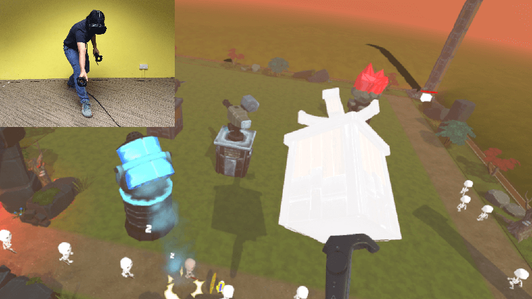

Tower Power is a co-op asynchronous multiplayer VR game featured in Unity Showcase at Unite Singapore 2016. I was one of the three programmers on the development team from the Diploma in Game Design and Development at Temasek Polytechnic.
Play the role of God to place towers and strategically to defend against your enemies. Alternatively, you can be the Hero on the ground skirmishing through the hordes of enemy with your ever powerful sword and shield. Importantly work together for the win! Use your towers wisely! For the kingdom!
During the 9 weeks of development, I had to pick up and learn Unity Networking. By the end of it, I was able to grasp sufficient knowlegde to synchronise hundreds of enemy units across multiple clients.
Tower Power was also awarded the Best Project Prize at the TP InfoTech Day 2017.
